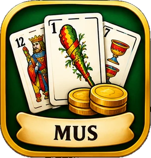
Mus
Por parejas, a 30 o 40, con 8 o 4 reyes y con señas o sin ellas. Envites y órdagos.
Las cartas de toda la vida en tu móvil Android: mus, tute, guiñote, cuatrola, pocha, brisca, chinchón, remigio, escoba y cinquillo. Con personas de verdad o con robots que juegan con cabeza.
Para Android. Elige un nick y a jugar: sin correo, sin teléfono, sin datos personales.
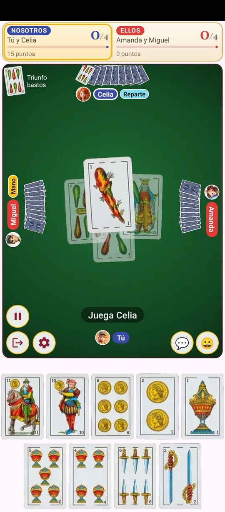
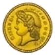
Todos los juegos y todas las opciones, sin pagar nada.
Juega todas las partidas que quieras: sin vidas, sin fichas y sin esperas.
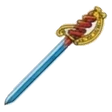
Solo un nick. Si quieres conservarlo en otro móvil, ponle una contraseña.
Con las reglas tradicionales de cada uno y las opciones de mesa de siempre, para que te sientas como en una partida de bar.

Por parejas, a 30 o 40, con 8 o 4 reyes y con señas o sin ellas. Envites y órdagos.
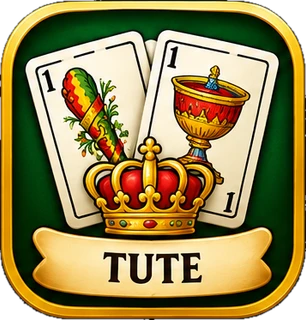
Por parejas o de 2, 3 o 4. Habanero, arrastrado y tute cabrón.
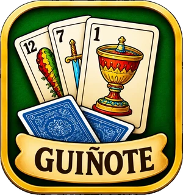
Por parejas o de 2, con cantes, cambio del 7, arrastre y vueltas.
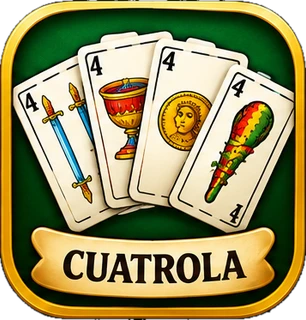
El clásico de parejas con solos, cuatrolas y quintolas.
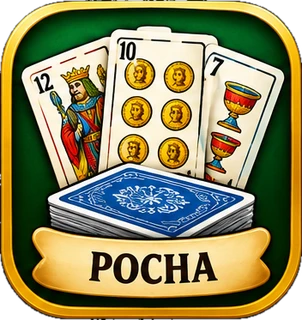
De 3 o 4: apuesta las bazas que vas a hacer y clávalas.
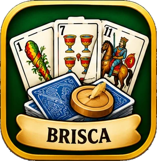
Por parejas o de 2, con el cambio del 7 y del 2.
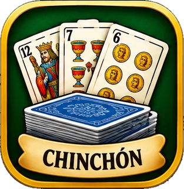
De 2 a 4. Elimina a los demás y cierra con chinchón.
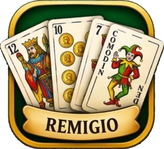
Con dos barajas y comodines, de 2 a 4 jugadores.
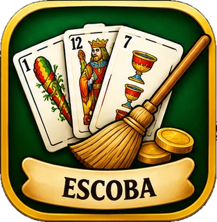
La escoba del 15, por parejas o de 2, 3 o 4, a 15, 21 o 31.
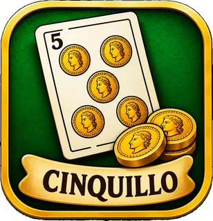
De 2, 3 o 4. Empieza el cinco de oros; mano a mano, con pozo.
Nació de las ganas de tener una app de cartas como las de antes: que no se coma el móvil y en la que la suerte sea suerte de verdad.
Hay juegos de cartas que piden más de 100 MB cada uno. Si quieres tener el mus, el chinchón y la escoba, son tres descargas enormes y el móvil avisando de que no queda espacio.
Aquí están los diez por poco más de 20 MB, menos que unas cuantas fotos. Se descarga en un momento aunque tengas pocos datos, cabe en cualquier móvil y no tendrás que borrar nada para hacerle sitio.
¿Te ha pasado en otros juegos que las manos parecen escritas de antemano? Aquí las cartas se reparten al azar e igual para todos: da igual cuánto juegues, quién seas o si nunca has pagado nada, porque aquí no hay nada que pagar que cambie tu suerte.
Y cada juego se reparte como se hace de verdad. En la cuatrola, por ejemplo, las cartas apenas se barajan entre mano y mano: se juntan las bazas, se mezclan un poco, se corta y se dan de tres en tres y de dos en dos, como en cualquier partida de bar.
Si te llega una mano mala, es que te ha tocado. Y la buena, también.
Siéntate en una mesa con sitio libre o crea la tuya. Y si no quieres esperar, complétala con robots y empieza al momento.
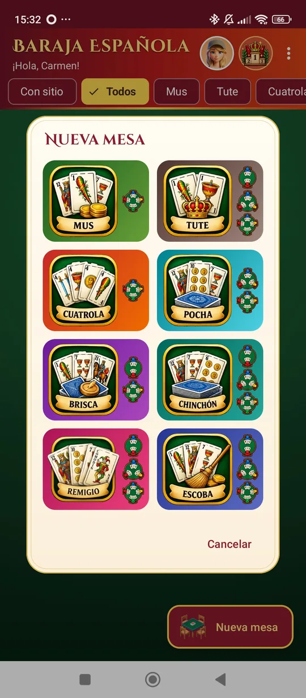
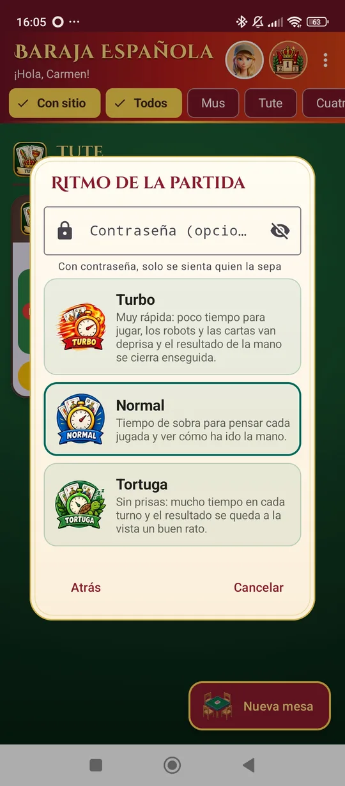
¿Nunca has jugado al mus o al guiñote? Cada juego trae su manual, con ejemplos de cartas, para empezar desde cero.
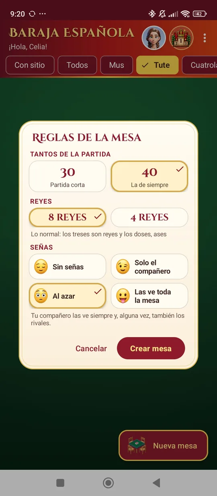
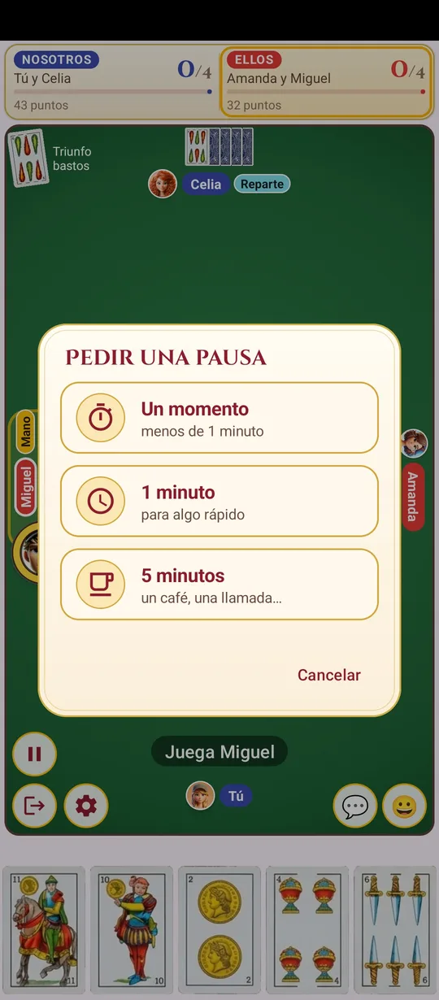
Diez barajas, muchos reversos y tapetes, cartas ordenadas o con aspecto realista, y más de 100 avatares.
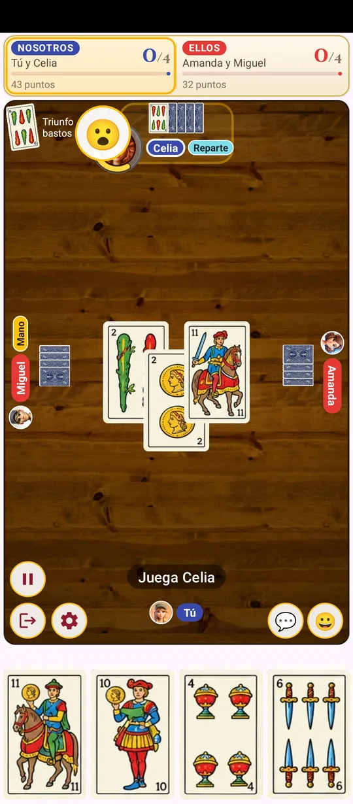
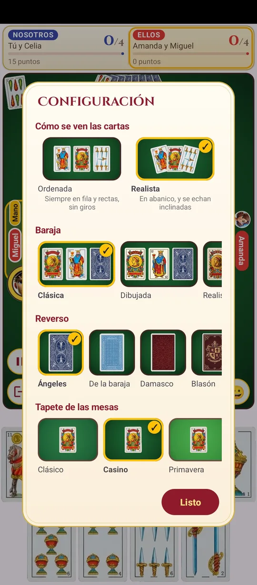
Cada partida suma. Sube de nivel en cada juego, consigue logros y escala en el ranking.
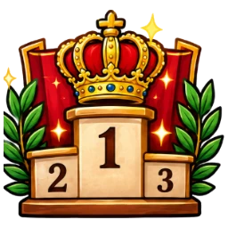
Lo que más nos preguntan sobre la app.
Sí. Todos los juegos y todas las opciones son gratis, sin límite de partidas, sin vidas y sin fichas. Nada de lo que se paga cambia las cartas que te tocan.
No. Basta con elegir un nick: no se pide correo, teléfono ni datos personales. Si quieres usar tu nick en otro móvil, puedes ponerle una contraseña.
Diez juegos con la baraja española: mus, tute (por parejas, habanero, arrastrado y cabrón), guiñote, cuatrola, pocha, brisca, chinchón, remigio, escoba del 15 y cinquillo.
Sí. Puedes completar cualquier mesa con robots y empezar al momento. Los robots cuentan cartas, apuestan e incluso se tiran faroles en el mus.
Sí. Crea una mesa privada con contraseña y compártela con tus amigos, o siéntate en cualquier mesa con sitio libre para jugar con gente de todas partes.
Por ahora solo para Android, en Google Play.
Unos 20 MB con los diez juegos, mucho menos que la mayoría de juegos de cartas sueltos.
Cada juego trae su manual con ejemplos de cartas: cómo se reparte, cómo se juega, cómo se cuentan los puntos y consejos.
Descarga Baraja Española gratis y juega ahora mismo, con amigos, con gente de todas partes o contra los robots.
Descárgala en Google Play